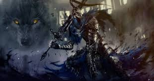

Artorias é um boss conhecido como um dos mais difecies e legais de dark souls 1
Ele e guereiro numa armadura cinza com panos azuis e uma espada grande preta
Ele era um grande heroi que tinha como seu fiel companheiro um cachoro chamado Sif que decidiu enfrentar os 4 lordes pois tinha achado o anel que o permite caminhar pelo vazio porém quando ele estava caminhando no vazio ele acabou enloquecendo
Uma recomendação é não tentar o parry e sim sempre opitar pelo rolamento pois ele tem poucos ataques que podem se dar o parry
Outra coisa que vc pode fazer e usar armas que conseguem quebrar a postura como espada grande e espaddas colosais ou ate armas com efeito como sangramento, veneno, etc...
E também utilizar uma armadura que o deixe no maximo na carga média